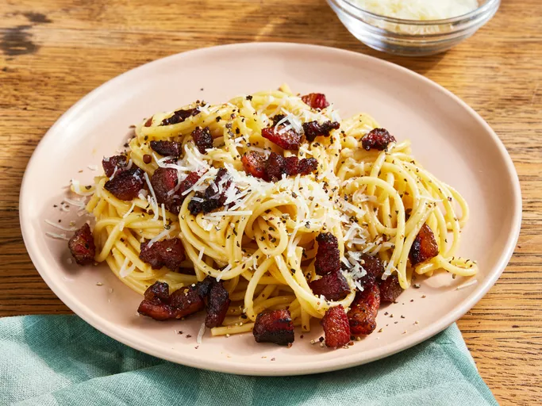

What is this?
Carbonara is made with guanciale (cured pork), eggs, Pecorino Romano cheese, spaghetti pasta, and lots of black pepper.
Italians don't add extra ingredients like cream, milk, garlic, or onions.
Try this recipe if you want to make an authentic, creamy carbonara that comes straight from Italy, where I live. Buon appetito!
What you need?
- Oil
- Guanciale
- Spaghetti
- Eggs
- Cheese
- Seasonings
How can you prepare this dish?
- Cook the pork in olive oil until browned and crispy, then drain on paper towels.
- Boil the spaghetti in salted water. Drain and return to the pot. Let cool.
- Whisk the eggs, 1/2 of the cheese, and some pepper in a bowl until smooth.
- Pour the egg mixture over the pasta, stirring quickly, until creamy.
- Stir in the pork, then top with the remaining cheese and more black pepper.